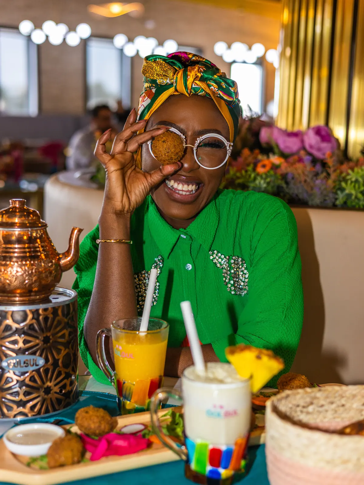
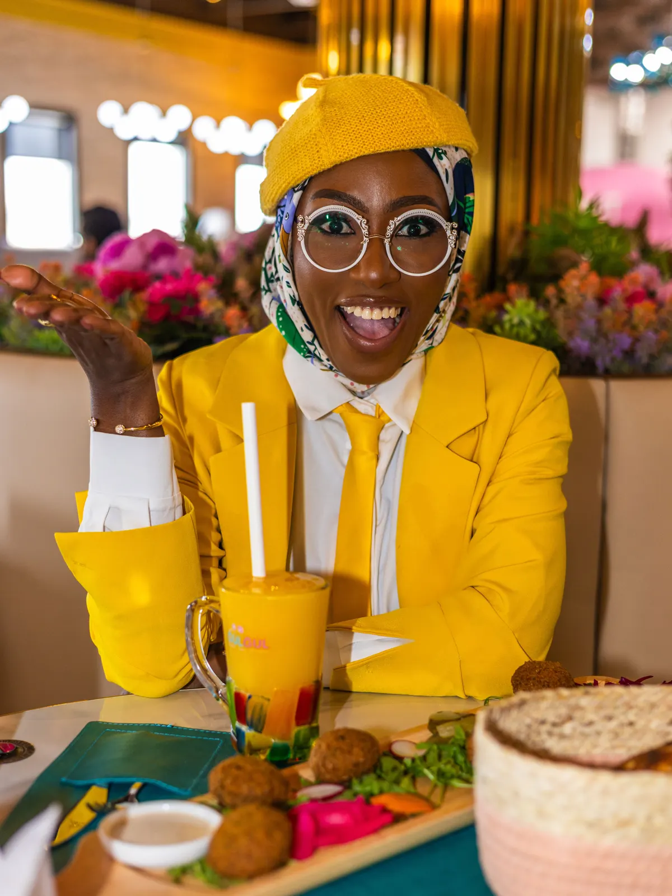

I see the whole world behind food.
I created That Foodie Lawyer to explore everything that shapes how food is experienced. TFL brings together consumer expectations, thoughtful experiences, practical industry insight and the systems behind trust. It is a platform for helping people look deeper, expect better and understand the choices that shape what reaches the plate and what keeps them coming back.

More than what is on the plate.
Food is business. Food is culture. Food is memory, trust and experience. Behind every dish, product and hospitality moment are choices about people, standards, systems, service and story. TFL exists to make those choices more visible and to show how much becomes possible when the whole picture is considered.
A point of view with purpose.
Three principles shape how I explore ideas, create experiences and support the people building the future of food.
Curiosity
I look beneath the surface. I ask what shaped the food, who is represented, what the consumer experiences and what the business needs to thrive.
Clarity
I make complex ideas easier to understand and act on, whether the subject is culture, compliance, strategy or customer trust.
Connection
I bring people, perspectives and possibilities together. The strongest food stories and businesses are built through meaningful relationships.
An industry voice with a practical lens.
I am Azeezat Adejare, also known as That Foodie Lawyer. I am a dual-qualified lawyer, food and hospitality strategist, and the founder of TFL Global Consulting. My work brings together legal and commercial judgment, consumer insight and a clear view of what makes food businesses and experiences worthy of trust.
I created TFL to raise expectations around how food is experienced and to equip the people behind food to build with greater clarity, consistency and intention. From advisory work and industry conversations to curated experiences and consumer-facing insight, I look at the whole picture: the promise a brand makes, the systems that support it and the experience that brings people back.

Ways to work together.
There are several ways to work with me, depending on what you are building and the perspective you need.
Advisory
Strategic support for food and hospitality founders through TFL Global Consulting.
Speaking
Thoughtful, practical conversations on food, law, culture, consumer expectations and business growth.
Media
Interviews, commentary, features and contributions informed by legal, commercial, industry and consumer insight.
Collaborations
Aligned projects, campaigns and experiences that move food and hospitality forward.
The future of food will be shaped by the people willing to see the whole picture.
Let us make food matter more.
Explore the ideas, experiences, conversations and strategic work helping people experience food more thoughtfully and helping the industry move forward with greater intention.